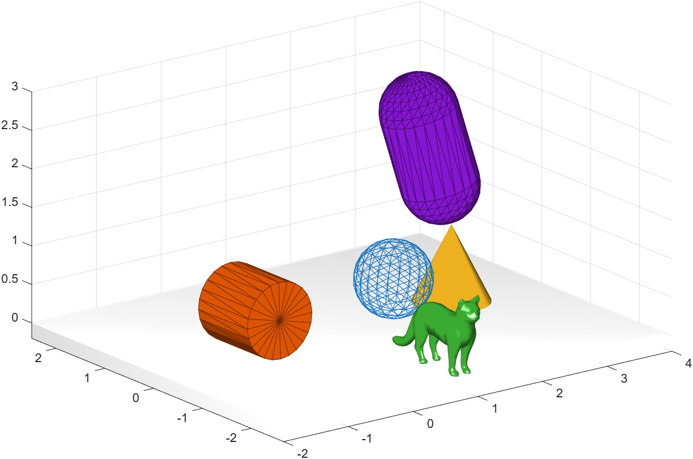

Giving a body its geometry, appearance and physical properties
A shape (Shape) determines how a body looks and how it
behaves in collisions. It is given either as a phx.shape.* object,
or in shorthand as a cell array {"Box", "Size", …}.
| Shape | Main options | Note |
|---|---|---|
| Box | Size [x y z] | Rectangular box. |
| Sphere | Diameter, Segments |
Sphere from a meridian/parallel grid. |
| Cylinder | Diameter, Height,
Axis | Cylinder. |
| Tube | InnerDiameter, WallThickness,
Height, Axis |
Pipe or funnel with an open bore; two inner diameters taper it. |
| Cone | Diameter, Height,
Axis | Cone; two diameters make a truncated cone. |
| Capsule | Diameter, Height,
Axis | Cylinder with rounded caps. |
| SphereShell, CapsuleShell, BoxShell |
Diameter or Size,
WallThickness (capsule also Height,
Axis; box InnerEdgeRadius) |
Hollow sphere, capsule or box, a wall solid from both sides: a tank for particles or a liquid, or a hollow ball, drum or crate. |
| Mesh | Source, Vertices/Faces,
Scale, Envelope |
Triangular mesh from an STL, OBJ or PLY file, or from data. |
| Terrain,
Rock, Extrusion, Revolution |
height field / profile | Terrain, rock and profile-based shapes. |
Appearance is tuned with Color,
Style (smooth,
edged, wireframe,
flat), Material and
Texture:
clf; view(3); axis equal; grid on; camlight headlight; phx.Body("Position", [0.5 0 2], "Shape", {"Sphere", "Style", "wireframe"}); phx.Body("Position", [0 0 0.5], "Shape", {"Cylinder", "Axis", "y", "Style", "edged"}); phx.Body("Position", [2.5 0 0.5], "Shape", {"Cone", "Axis", "z"}); phx.Body("Position", [2.5 0 2], "Shape", {"Capsule", "Axis", "z"}); phx.Body("Position", [1 -1.8 1], "Shape", {"Mesh", "Source", "res/cat.stl", ... "Scale", 0.025, "Material", "glossy"});

phxex_shapes.phx.Body is the most important object. Its properties can be both read and written — even during the simulation (they read/write the engine directly).
| Property | Meaning |
|---|---|
| Position | Position [x y z] in global coordinates. |
| Orientation / EulerAngles / Quaternion | Body orientation (rotation matrix, Euler angles or quaternion). |
| XAxis / YAxis / ZAxis | Direction of a body axis. Setting it turns the body by the smallest rotation that points
the axis there, handy for shapes with an axis such as a cylinder:
"ZAxis", [1 0 1] tilts it 45° without twisting it. |
| LinearVelocity / AngularVelocity | Linear and angular velocity. |
| Type | "dynamic" · "static"
· "kinematic". A kinematic body moves only as you drive it.
A pose (Position, EulerAngles, …)
is reached within the next engine step, and then the body stands still: set it before every
step, without substeps (sim.step(dt)), or drive the body by
LinearVelocity and AngularVelocity,
which hold until changed. |
| Mass | Mass [kg]. Can also be derived from the shape density
(Density). |
| CenterOfMass | Centre of mass [m] in the body frame, relative to the origin; the shape gives it, like
Mass and Inertia (which is about it).
Set it to model a ballasted boat or a loaded vehicle, also while the simulation runs: the body
does not move, it only turns about the new centre and gravity acts there. |
| Friction | Coulomb friction coefficient; a contact takes the geometric mean of the values of both bodies. |
| RollingResistance / SpinRadius | Rolling resistance and spin radius [m], both 0 by default: the arm of the normal force that resists rolling, and the effective contact patch radius that resists spinning of a point contact. A contact adds the values of both bodies. |
| ContactStiffness / ContactDamping | Contact stiffness [N/m] and damping [N·s/m]: Inf and 0 by
default, a rigid contact. A finite stiffness makes the contacts of the body compliant (see
below). |
| TotalForce / TotalTorque / Energy | Current force, torque and kinetic energy (read-only). |
| LinearAcceleration / AngularAcceleration | Mean accelerations over the last step (read-only), in world axes, the linear one of the centre of mass. Gravity counts: a body in free fall reads g, where an accelerometer would read zero. They work for kinematic bodies and bodies without mass as well. |
A body can also be acted on directly with a force or a torque. AppliedForce
and AppliedTorque stay until changed; applyForce
and applyTorque act for the next engine step only, which is one
substep of sim.step:
body.AppliedForce = [0 0 50]; % 50 N along the body z axis, in every step body.AppliedTorque = [0 0 2]; % 2 N*m about the body z axis, in every step body.applyForce([0 0 50]); % a 50 N push for one substep body.LinearVelocity = [2 0 0]; % set velocity at runtime
See Forces, actuators and fields.
Contacts are rigid by default: bodies do not sink into each other, and the force of a
contact is whatever keeps them apart. A rubber pad, a polyurethane wheel or a padded support
is better described by a spring along the contact normal. A finite
ContactStiffness k with a
ContactDamping c makes every contact of the body a
spring-damper, with the force
F = max(0, k d + c d′)
of the penetration d. It is the contact law of Simscape Multibody's Spatial Contact
Force and of Adams, in the same units:
RollingResistance and
SpinRadius act as on a rigid contact.pad = phx.Body("Type", "kinematic", "Shape", {"Box", "Size", [0.04 0.3 0.3]}, ... "ContactStiffness", 1e4, "ContactDamping", 70); % 10 N per mm, rubber pad.TotalForce % the contact force on the pad, after a step
A body of mass m stays in contact for about Tc = π√(m/k). Resting, rolling and clamping contacts come out right at any step. The force and the rebound of an impact follow the law within a few per cent with an engine step of Tc/10 or less, and within about 10 % up to Tc/3. With coarser steps impacts become inelastic, while the contact stays stable even at a very high stiffness. A stiffness that leaves a penetration of a millimetre or more under the working loads is usually what a compliant contact is for; keep the penetration well below the size of the shapes.
phxex_grip the jaw pads clamp the object
with ContactStiffness times their squeeze, and the plot shows the
clamping force and the friction carrying the object; rigid jaws pressed in by the same
3.5 mm clamped it with kilonewtons. In phxex_coaster compliant wheel treads
take the knocks of the faceted rails: the wheels stay on the rails, and the train loses less
speed.
The stiffness belongs to the whole contact face and is shared by its points, so a box on
its face rocks as on springs at its corners. A body touching a triangle mesh may meet it in
several faces at once, and is then stiffer than its
ContactStiffness says. Soft bodies, flexible bodies and
particles keep rigid contacts.
[0 0 -9.81] m/s². You change it when
creating the simulation: phx.Simulation("Gravity", [0 0 0]) for
weightlessness.